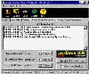
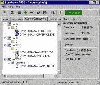

|
|
| 当前位置：电脑报电子版 > 1999 年 > 43 期 > 大众网络 > 黑客的终极杀手——LockDown 2000 |
| 《 黑客的终极杀手——LockDown 2000 》 |
| 自1998年BO（Back Orifice的简称，文雅一点的中文译名叫“后门”） V1.2发布之后，今年7月14日，黑客年会又在美国拉斯维加斯如期举行，三千多名来自世界各地的一流黑客高手和计算机专家参加了这次会议。据说，美国FBI(联邦调查局)特工人员也不邀而至。在会议期间，黑客组织Cult of the Cow（母牛的祭拜）通过各种方式向世界免费发放了最新黑客软件BO 2000，同时，还按照黑客的原则，公布了全部源代码。 在短短的一个月时间内，一个1.3M大小的软件获得了全世界所有有重大影响的媒体的报导，如CNN、时代周刊等，引起了信息界和各国政府的关注。 BO 2000由两部分组成：客户端程序（Client）和服务器端程序（Server）。服务器端程序用来攻击对方的计算机，一旦服务器端程序在被攻击的计算机上运行一次，客户端程序就可以把对方的计算机完全控制。客户端程序可对被控制的计算机执行很多可怕的操作：搜索和下载对方的所有软件和文档，执行被控制的计算机里的任何程序，记录所有的密码、所键入的每一个字，甚至重新启动计算机，锁死系统等等，如同使用同一台计算机一样。 虽然现在有大量的功能强大的杀毒软件，正如我们了解的那样，任何反病毒软件都是通过特征代码的搜索来确认BO 2000的，但是，BO 2000并非是一般意义的病毒，而是一个应用程序，经过修改的BO 2000可很容易地变换各种特征码，绕过反病毒软件的扫描。 笔者长期以来对各种黑客资料很感兴趣，在BO 2000发行后，我就经常开足搜索引擎在世界各站点寻找对付它的武器。功夫不负有心人，终于找到了今年8月1日才发布的BO 2000的终极杀手LockDown 2000。经试用后，即被其强大的功能所震撼，现介绍给大家，本人更希望计算机编程高手能体会该软件的奥秘，编出比它更好的反黑客程序，为我国网络事业作出贡献。 LockDown 2000是Harbor Telco 保安公司开发的号称Windows最有效的网络安全防护软件，不仅可以与局域网中现有的防火墙一起合作，自己本身也可以作为一道单独的防火墙，防堵并监控来自网络上的黑客闯入你的计算机。当你连线上网时，LockDown 2000会自动在后台启动（如图1），实时查杀364种黑客程序。 它的主要功能有： 1可记录连入你计算机的使用者的连接情况 如果你选择让其他局域网连接到你的电脑上时，LockDown 2000可以自动地为你将对方所有的连结过程记录下来，让连结方在你的监控下，不但可以记录到对方的IP地址，而且可以将对方主机的名称也一并记录下来。你还可以记录所有客户的登录。 2可有选择性地让使用者连入你的计算机 用LockDown 2000管理连线到你机器上的使用者也相当地方便好用，你可以选择拒绝所有的使用者连结上来，或者是只让经过你核准并且列在你IP清单中的使用者才可以连结上来，这样不但可以有效地对使用者区别对待，并且可以避免黑客的入侵。 3可即时切断使用者的连线 除了上述利用IP控管的方式来选择可以登录你主机的远端使用者之外，你还可以通过其它方法来立即打击这些入侵你电脑的不速之客。在LockDown 2000中拥有即时切断使用者连线的功能，当有不明人士连结到你的电脑上时，你可以选择使用这种功能，这样，即使你先前的防备并没有起作用，也还来得及将对方断线，并且可以即时监控在你电脑上的使用者正在进行哪些活动，这些都将会被完整地记录下来。 4可查找不速之客的来源 另外你也可使用LockDown 2000来帮你找出那些不速之客是从哪里来的，你只要运行LockDown 2000之中的TraceRoute工具，便可以正确地找到对方的连线IP、主机名称等等，用Whols工具可以让对方犯罪的证据完整地记录下来。 5具有警告提醒功能 如果你本人当时并没有坐在电脑前，只要有人想要连结到你的电脑上，LockDown 2000就会发出警告的声响，提醒你赶快去监控对方在你电脑上进行何种活动。如果你觉得光声音还不够，这时还可以选择以Pop－up(弹出式窗口)的方式来提醒你。 LockDown 2000代表了反黑客网络技术的一个质的飞跃，自从安装了LockDown 2000V2.5后的10天里，该软件在我上网时帮我粉碎了5次使用Netbus黑客程序入侵我的计算机安置特洛伊木马(Trojan Horses)的企图。图2就是我记录下的黑客程序5次入侵我的计算机时被LockDown 2000拦截的记录。 LockDown 2000 是全功能共享软件，不过试用期只有10天。程序的下载网址是http://lockdown2000.com/，文件大小为2MB，最新版本为V3.0，可适于Windows 95/98/NT。LockDown 2000的安装使用很方便，你可下载后运行其自解压程序，利用它的基本设置可直接启动使用。 对自己电脑有疑问的朋友，特别是网友们，快行动吧，不然黑客在后院放火就麻烦了。 (四川 杜江) |
| 下载本期推荐软件 | 页 首 |
| 《电脑报》版权所有，电脑报网站编辑部设计制作发布 |